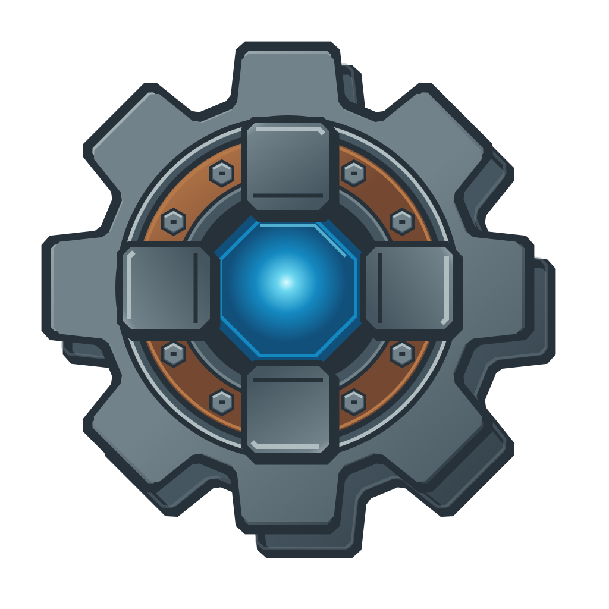
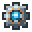

厚铸钢齿轮与深嵌蓝芯 · R2
厚铸钢八齿轮 · 36/40px背层台阶 · 暗铜螺栓法兰 · 宽切角压板 · 深嵌蓝芯
真实矢量 SVG · 明暗背景
明色背景
暗色背景
真实 1024px PNG · 明暗背景
透明PNG / 明底

透明PNG / 暗底
识别特征沿用 · 原像素版对照
原游戏像素图标

连续矢量宣传版
保留八齿钢灰轮体、铜圈、四向钢卡爪和蓝白核芯；按用户重工业反馈增加钢背层、暗铜螺栓法兰与硬切角压板。游戏图标和已交模组内容保持原样。
透明背景与完整留白
宣传素材下载


当前下载统一为厚铸钢R2：连续SVG与1024/2048/4096透明PNG，宣传ZIP仅绑定R2。R1轻量玻璃版历史包仅保留历史，已被用户重工业反馈要求整改。本页引用真实源稿和导出物；离线素材预览不是 Minecraft 截图。视觉选择由用户确认。